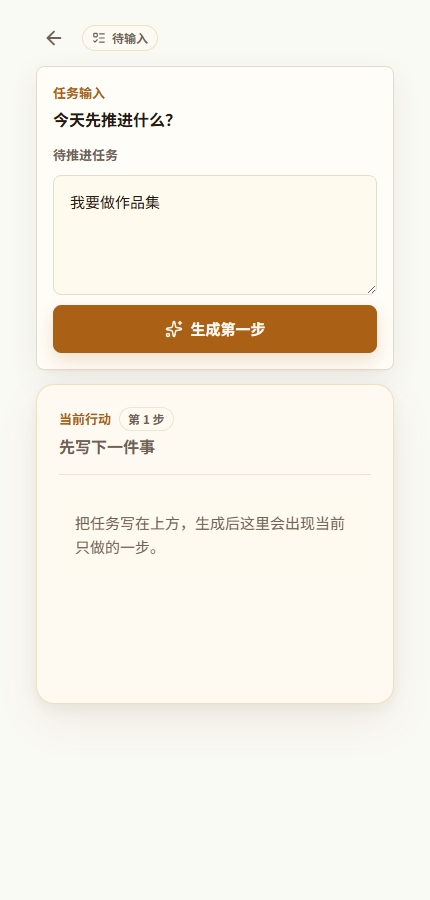
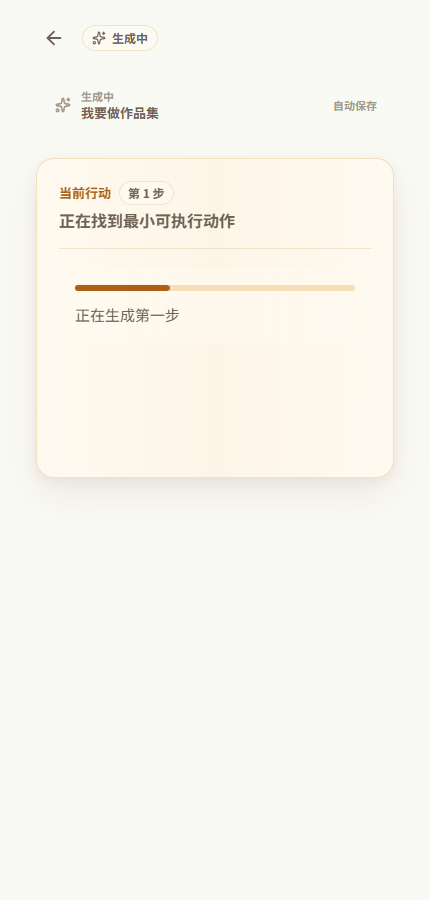
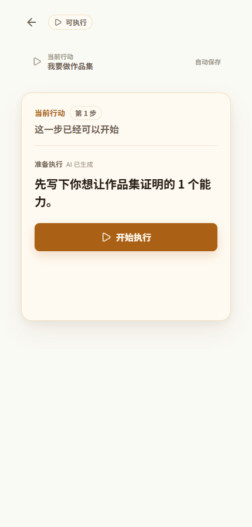
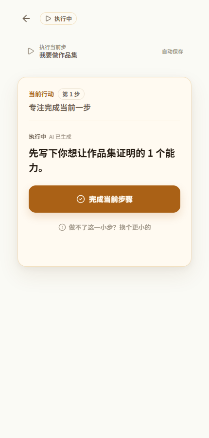
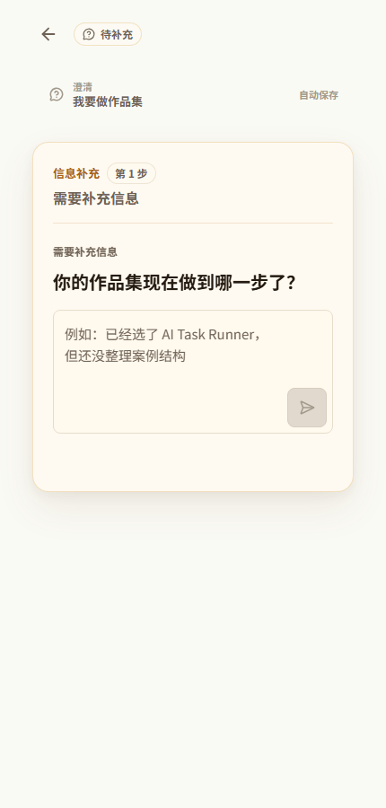
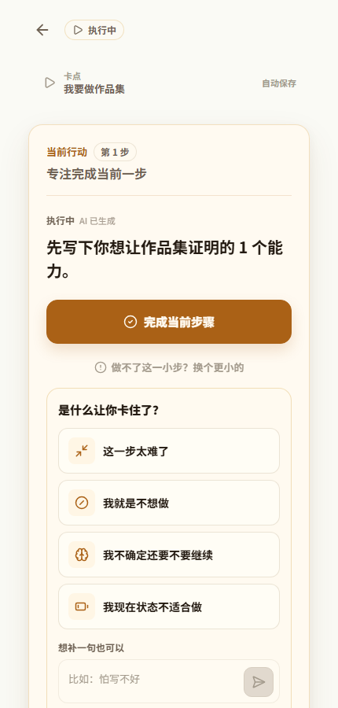
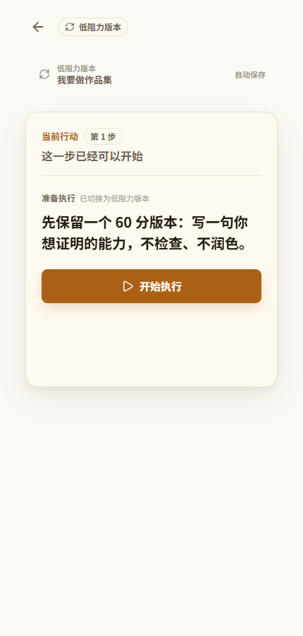
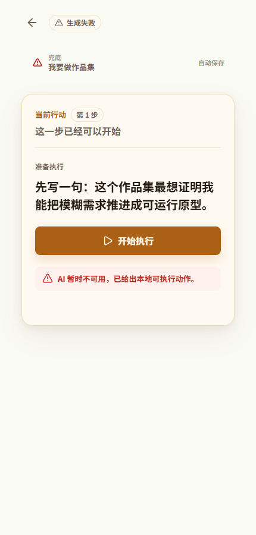
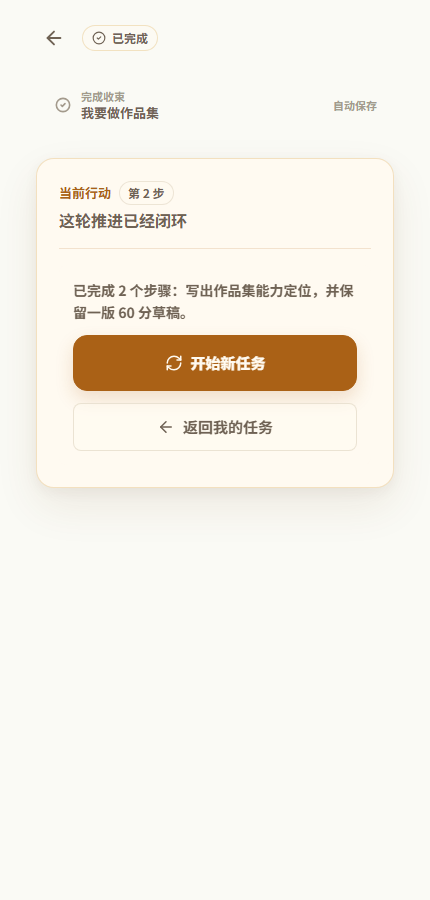

启动断点
知道要修改简历、写作品集或准备汇报，但卡在第一句、第一步、第一处改动。
Case Study / AI Product MVP
面向任务启动困难的 AI 任务推进原型。它不是生成一份完整计划， 而是把模糊、高压力任务压缩成一个低阻力、可执行、可恢复的当前动作。
01 / 用户问题
项目的问题定义来自求职、学习、创作和沟通任务里的执行断点： 目标存在，但启动成本、判断成本和恢复成本太高。
知道要修改简历、写作品集或准备汇报，但卡在第一句、第一步、第一处改动。
完成一个小动作后，不知道下一步如何自然衔接，容易重新回到空白状态。
卡住、中断、低能量或担心被评价时，继续催促会增加阻力，需要更低门槛入口。
02 / 产品目标
目标不是让 AI 输出更多内容，而是让它在合适的时机给出可执行、可继续、可恢复的任务动作。
不默认生成完整计划，优先回答“此刻最容易开始的一步是什么”。
避免“整理一下”“优化一下”，把步骤落到可观察的输出边界。
只问一个最关键问题，补齐当前步骤需要的最小上下文。
根据阻力类型给 fallback step，而不是继续要求完成原动作。
03 / 核心流程
主链路负责持续推进任务；两个旁路分别处理信息不足和执行卡住。
信息不足旁路
执行卡住旁路
04 / 关键 UX 决策
当前界面的关键不是复杂功能，而是让用户在每个状态下知道“现在只做这一件事”。
当前动作、步骤状态、完成标准、开始和卡住入口集中在同一个卡片中。
澄清不是表单收集，而是在缺少关键上下文时补齐一个最小事实。
把“我卡住了”设计成恢复机制，针对太难、不想做、不确定、状态不好给不同 fallback。
通过 stepHistory 让下一步从已完成内容继续，而不是重新生成一套计划。
05 / 状态机展示
这里直接引用真实 React 组件截图，把主状态和关键分支一起展示： 输入、生成、当前行动、执行、澄清、卡点、低阻力版本、本地兜底和完成收束。

真实组件预览：用户只写任务，不先被要求拆完整计划。

真实组件预览：生成中只说明系统正在寻找当前可执行动作。

真实组件预览：AI 输出被收敛成 StepCard 里的单个当前动作。

真实组件预览：主按钮变成完成当前步骤，同时保留卡点入口。

真实组件预览：信息不足时先问一个必要问题，再继续生成当前行动。

真实组件预览：用户可以选择阻力类型，系统再决定如何降低动作门槛。

真实组件预览：不是继续催原步骤，而是替换成更容易恢复的一步。

真实组件预览：AI 失败或超时时，流程仍然给出本地可执行动作。

真实组件预览：完成后用 result-state 收束，不再无限拆下一步。
06 / AI 机制说明
这个项目的 AI 价值不在于“更会聊天”，而在于它被放进任务推进流程中， 负责生成、澄清、降阻力和结束判断。
07 / 设计迭代过程
迭代重点不是不断加功能，而是让核心闭环更稳定：能开始、能继续、能恢复、能结束。
验证最小价值：用户输入任务后，系统生成一个能立刻开始的短步骤。
把 AI 返回的一句话包装成可执行状态，加入开始、完成、卡住和恢复入口。
用户完成当前步后，记录历史并生成自然衔接的下一步，避免重新开始。
当信息不足时先问必要问题；当用户卡住时根据阻力类型降低门槛。
补充低能量、重复步骤、AI 失败和 fallback step 等边界测试，并整理作品集证据。
08 / 反思与下一步
这个 Case Study 的重点应保持诚实：当前是可运行 MVP，已经验证机制雏形， 但真实用户长期使用和复杂任务质量仍需要继续验证。
任务启动困难场景里，用户常常不缺信息，而是缺少一个足够小、足够安全的动作。 因此产品设计的关键是把 AI 输出放进状态、上下文和恢复机制里。
Source: Feishu portfolio draft / local project docs and MVP source.